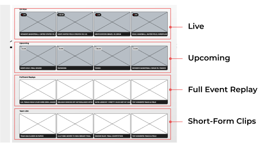

Design Objective
Our early prototyping work focused on defining the baseline experience for how millions of viewers would discover and follow Olympic content across devices. We began by designing a landing environment centered on two core entry points: “On Now” live coverage and curated Highlights, ensuring that users could immediately see what mattered most in that moment. From this foundation, we expanded into key audience needs for deeper exploration, building a sports-focused navigation framework, a spotlight section for featured athletes, and a medals experience that linked both to daily medal VOD compilations and real-time country rankings by medal count. These prototypes helped establish the core architecture for how fans would track stories, performances, and results throughout Paris 2024, ultimately informing the final multi-platform design system at global Olympic scale.
Problem
Different partners, different systems — one Olympics. The UI needed to be consistent, responsive to real-time events, and easy for partners to ship quickly.
- Varied navigation patterns and tech stacks across partners
- Thousands of events updating daily; manual curation was not feasible
- Brand and accessibility standards had to be enforced at scale


- 1. Series Title - Delivered through Gracenote API
- 2. Series Metadata - Delivered through Gracenote API
- 3. On Now Rail - selecting would launch the live stream. Source our own internal API.
- 4. Scenic Wallpaper - Delivered through Gracenote API
Rail/Tray Content Types
Deliver a seamless Olympics streaming experience across partner apps so fans can discover, watch, and return to live and on-demand moments — without friction. Build a component-driven system that adapts to real-time schedules, athlete stories, and platform constraints.
- Platforms:
- Role: Senior Product UX Manager — strategy, IA, design system, prototyping, partner reviews
- Focus: Findability, live/replay flow, artwork automation, cross-platform consistency

- Platforms:
- Role: Senior Product UX Manager — strategy, IA, design system, prototyping, partner reviews
- Focus: Findability, live/replay flow, artwork automation, cross-platform consistency